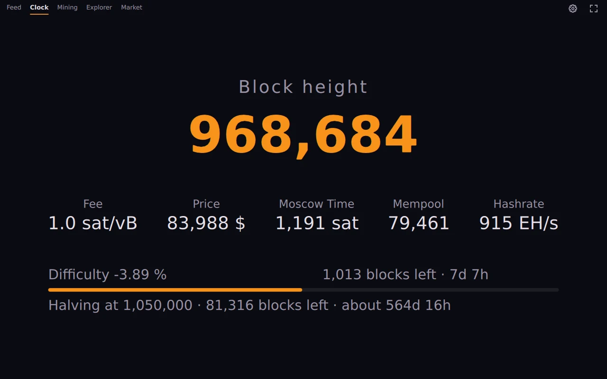

Die Uhr zeigt die aktuelle Blockhöhe in großen Zahlen, darunter Gebühr, Kurs, Moscow Time, Größe des Mempools und Hashrate. Ein Balken zählt bis zur nächsten Schwierigkeitsanpassung, eine Zeile bis zum Halving.
Auf dem Schirm gibt es keine Bedienelemente, so lässt sie sich auch quer durch den Raum lesen. Was groß in der Mitte steht, wird in den Einstellungen gewählt, und mehrere gewählte Werte wechseln sich ab.
Unter Android bleibt der Bildschirm an, solange OrangeDeck im Vollbild läuft. Dafür braucht es keine Berechtigung, und im Hintergrund hält die App nichts wach. Der Android-Bau hat eine Verknüpfung auf dem Startbildschirm, die direkt die Uhr öffnet.
Jedes Telefon oder Tablet mit Android 9 oder neuer und einem 64-Bit-ARM-Prozessor reicht. Am Rechner läuft dieselbe Ansicht als Widget, etwa in einer Ecke des zweiten Bildschirms.
Kurs und Moscow Time folgen der gewählten Währung: Euro, US-Dollar, Pfund, Schweizer Franken, kanadischer oder australischer Dollar oder Yen.
